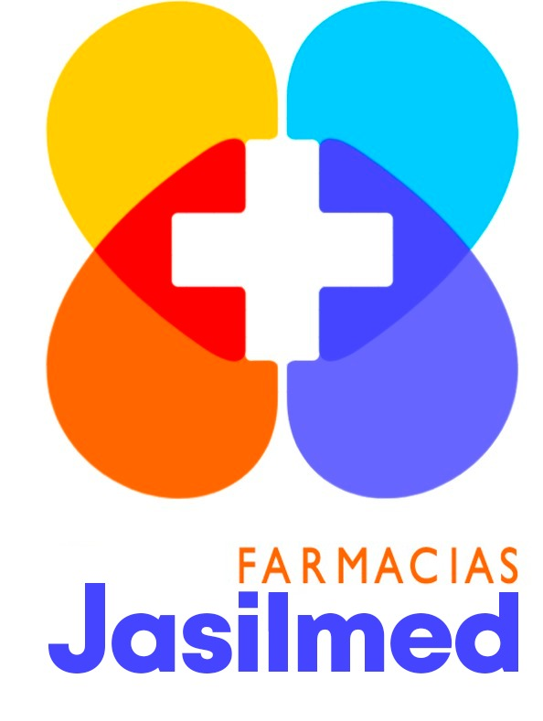

Paleta de colores · Farmacias Jasilmed
Colores extraídos directamente del logo oficial (los 4 pétalos de la cruz médica) para usar de forma consistente en banners, manuales, sistema y material de marca.
El azul y el naranja son los colores del texto del logo («Jasilmed» y «FARMACIAS»); son los que deben dominar en interfaces, títulos y botones principales.
Azul Jasilmed
Azul Jasilmed
#4545FDRGB 69, 69, 253
Uso: texto "Jasilmed", botones primarios, enlaces, encabezados.
Naranja Farmacias
Naranja Farmacias
#FE6404RGB 254, 100, 4
Uso: texto "FARMACIAS", acentos, llamados a la acción secundarios.
Colores de apoyo tomados de los 4 pétalos de la cruz. Úsalos como acentos puntuales (íconos, badges, gráficas), no como color dominante de fondo.
Amarillo
Amarillo Jasilmed
#FFCD00RGB 255, 205, 0
Uso: destacados, iconografía de energía/rapidez, badges de promoción.
Celeste
Celeste Jasilmed
#00CDFFRGB 0, 205, 255
Uso: información, elementos de salud/bienestar, fondos suaves.
Rojo
Rojo Jasilmed
#F80404RGB 248, 4, 4
Uso: alertas, urgencias, cruz médica, errores del sistema.
Azul-violeta
Azul-violeta
#494AF2RGB 73, 74, 242
Uso: variante del azul primario para degradados y hover states.
Blanco de la cruz del logo + escala de grises para texto, fondos y bordes de interfaz.
Blanco
Blanco (cruz)
#FFFFFFRGB 255, 255, 255
Uso: fondos principales, cruz médica, texto sobre colores oscuros.
Texto principal
Gris oscuro (texto)
#1E2430RGB 30, 36, 48
Uso: texto principal, títulos sobre fondo blanco.
Texto secundario
Gris medio (texto secundario)
#5C6472RGB 92, 100, 114
Uso: descripciones, texto de apoyo, subtítulos.
Fondo suave
Gris muy claro
#F7F8FARGB 247, 248, 250
Uso: fondo general de páginas, tarjetas alternas.
Variaciones claras/oscuras de cada color principal, listas para usar en estados hover, fondos de badge y bordes.
Combinación de los 4 colores del logo, útil para encabezados, portadas de manuales o fondos decorativos que evoquen la cruz médica.
Botón / encabezado primario
Fondo #4545FD + texto blanco
Fondo suave con acento azul
Fondo #ECEAFF + texto #2F2FCF
Llamado a la acción
Fondo #FE6404 + texto blanco
Badge de promoción
Fondo #FFF7D9 + texto #C99F00
Alerta / error
Fondo #FFE3E3 + texto #C40303
Información / nota
Fondo #E0F9FF + texto #0099C2
Color de fondo Mejor color de texto Recomendación
#4545FD Blanco Buen contraste, apto para botones y encabezados #FE6404 Blanco Buen contraste, apto para CTA #FFCD00 Gris oscuro / negro El blanco casi no se lee sobre amarillo, usar texto oscuro #00CDFF Gris oscuro / azul oscuro Evitar blanco puro, prefiere texto oscuro o azul marca #F80404 Blanco Buen contraste, ideal para alertas críticas
Paleta de marca · Farmacias Jasilmed — extraída del logo oficial (docs/logo_farm_jasilmed.jpeg)